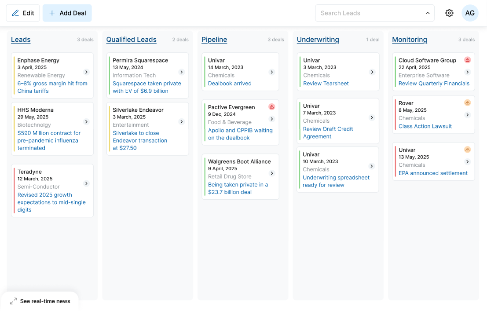
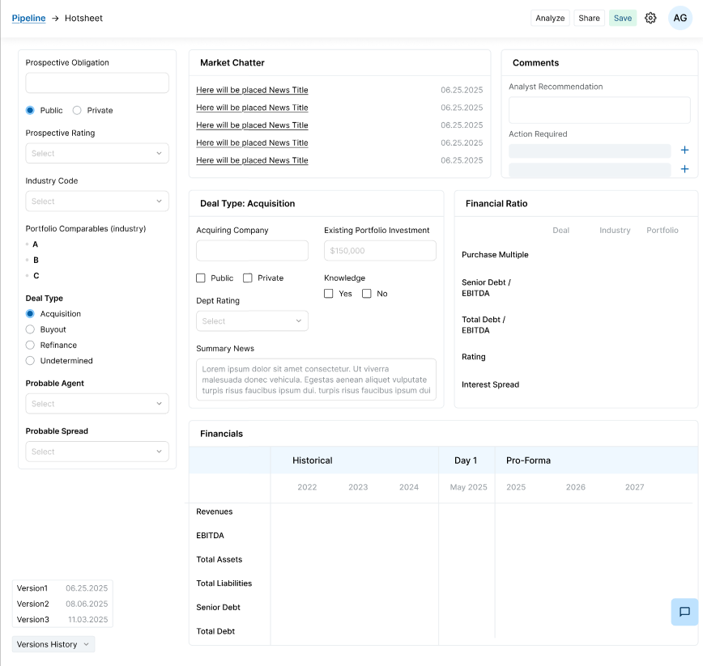
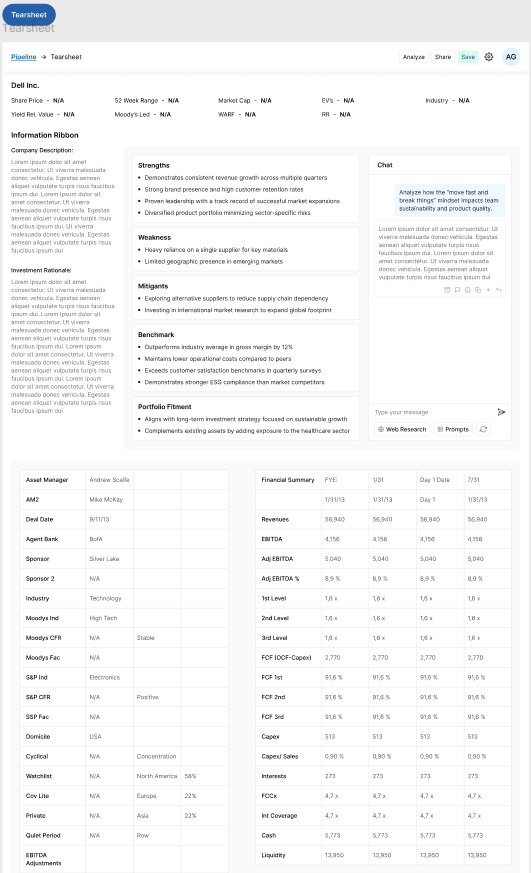
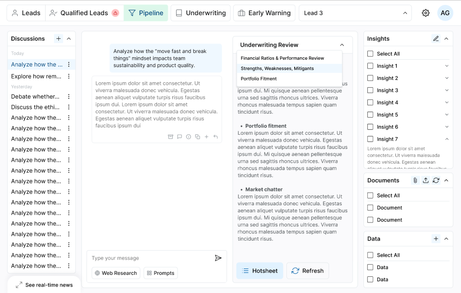

Underwriting Judgment
The reasoning behind why a deal was structured, priced, approved, or passed - captured and reusable.
Built by credit experts, for credit experts
The AI-native application for the full credit lifecycle, grounded in your firm’s underwriting judgment, actual portfolio outcomes, and market context.
Of all the AI credit tools we have evaluated, CREDITspective is the only one designed to work across the end-to-end credit lifecycle. Global Asset ManagerSee the platform
A mantle intelligence layer
CREDITspective works across the systems, models, repositories, and workflows your teams already trust. It connects the context around each transaction without forcing a platform replacement.
From deal history to decision advantage
Not a document archive. Not simple retrieval. CREDITspective identifies the right precedent, explains why it matters, and applies it to the decision in front of the team.
The reasoning behind why a deal was structured, priced, approved, or passed - captured and reusable.
How the credit actually performed after close - ground truth, not just what the model projected.
Vintage, market regime, comparable terms, and sector conditions so every precedent is judged in context.
Relevant successes, misses, and avoided risks are surfaced on every new deal with evidence and rationale.
The new credit operating model
Concise on the homepage; expandable when a buyer wants the detail.
CREDITspective amplifies each analyst with the firm’s collective acumen, giving every team member access to senior-level pattern recognition.
Regime- and vintage-aware analysis combines current market context, comparable terms, and the conditions under which prior decisions were made.
Institutional Memory organizes prior underwriting, actual performance, and outcomes into reusable context for the next decision.
Continuous variance, covenant, liquidity, and working-capital analysis highlights emerging risks before they become loss events.
Parallel, agent-driven workflows automate extraction, first-pass analysis, evidence gathering, and drafting while preserving human judgment.
A unified context layer organizes documents, data, models, discussions, and decisions around each transaction.
The entire credit workflow, unified
Every output includes an evidence layer showing the source material, assumptions, calculations, and Institutional Memory used to produce it.
Discovery
Track deals from initial discovery through closing, score opportunities against the credit box, and surface relevant internal and external context.

Underwriting
Auto-spread financials, identify deal-specific areas of focus, review base and downside assumptions, and draft analysis grounded in policy and precedent.

Portfolio Management
Bring underwriting, current financials, portfolio context, and credit actions into one decision workspace for reviews, amendments, waivers, and exits.

Monitoring
Continuously compare borrower actuals with the base case, downside case, and credit agreement, then direct attention to the variances that matter.

What CREDITspective enables
Prioritize opportunities aligned with mandate, credit box, portfolio concentration, and vintage preferences.
Make every funded, declined, amended, and exited deal reusable context for the next decision.
Compress document review and first-pass production while expanding the depth of analysis and challenge.
Connect actual performance to the original thesis and act before emerging weakness becomes a loss event.
Purpose-built for institutional credit
See it on a real credit
Evaluate underwriting depth, workflow fit, portfolio monitoring, and the incremental value of firm-specific precedent.